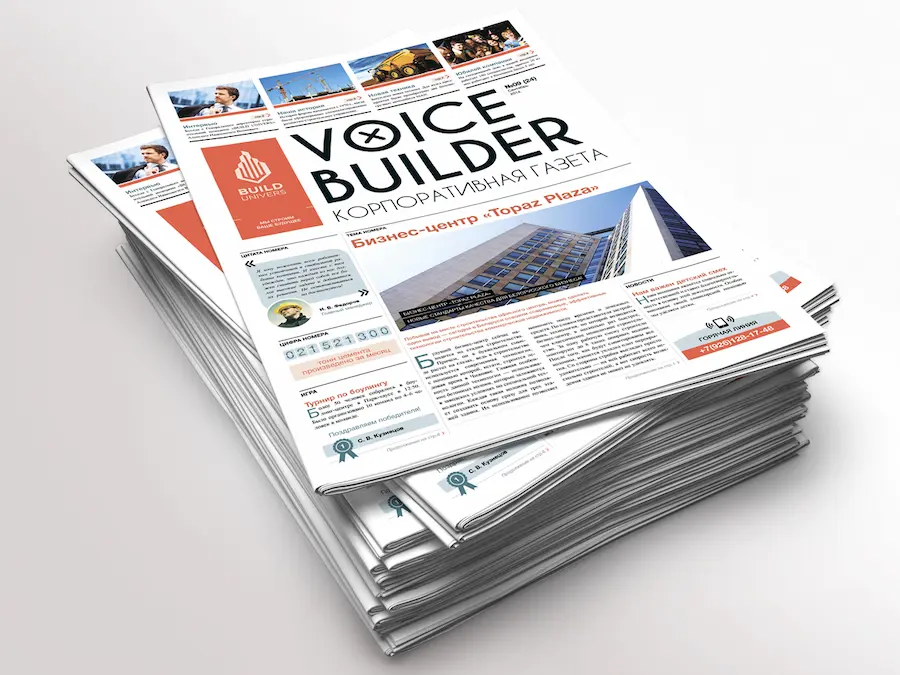

Печать газет от 3 руб/зкз
Наша типография предлагает широкий выбор форматов и типов бумаги для вашей корпоративной газеты. Вы можете выбрать оптимальный вариант в зависимости от целей вашего издания и бюджета. Цифровая печать корпоративных газет небольшими тиражами. Листовая офсетная печать корпоративных газет считается лучшей по сочетанию скорости и финансовых затрат она опережает цифровую печать, обеспечивая минимальную себестоимость одного издания при заказе тиража от 200 экземпляров. При этом листовой офсет позволяет использовать разнообразные цветовые решения, применять как стандартные краски CMYK, так и дополнительные цвета системы Pantone.
Сделать заказ